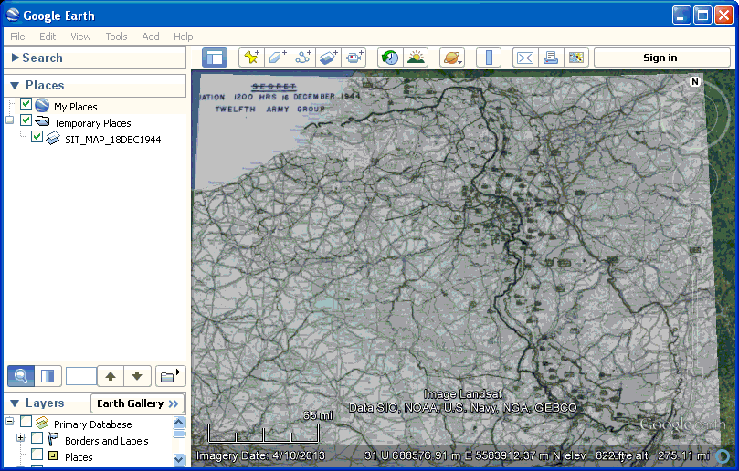

Tile and Export Historic Maps
 |
| After you have done a Delauney triangulation
registration of the map, you can tile it and export it to
Google Earth. On the Reg Button of the registration window, pick Export map for Google Earth. Set the parameters for the export. It will open directly in Google Earth, and will effectively decollar the maps. If you want to save, right click in Google Earth, pick "Save place as", and save as a KMZ file. A similar option "Reproject map" lets you save the image as a Geotiff and reopen it in MICRODEM as a normal map. |
Last revision 2/23/2014